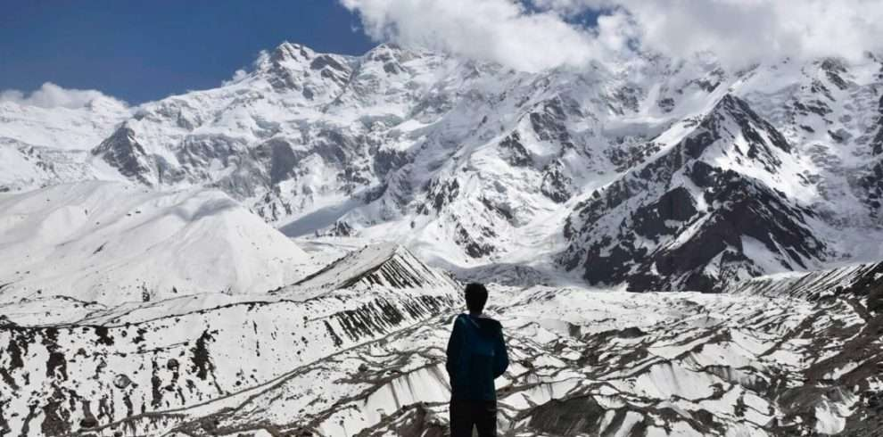
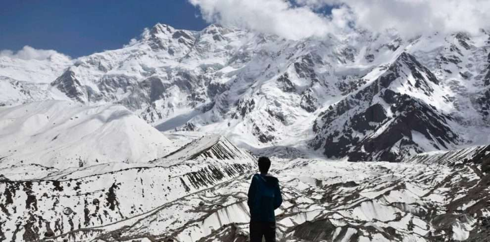
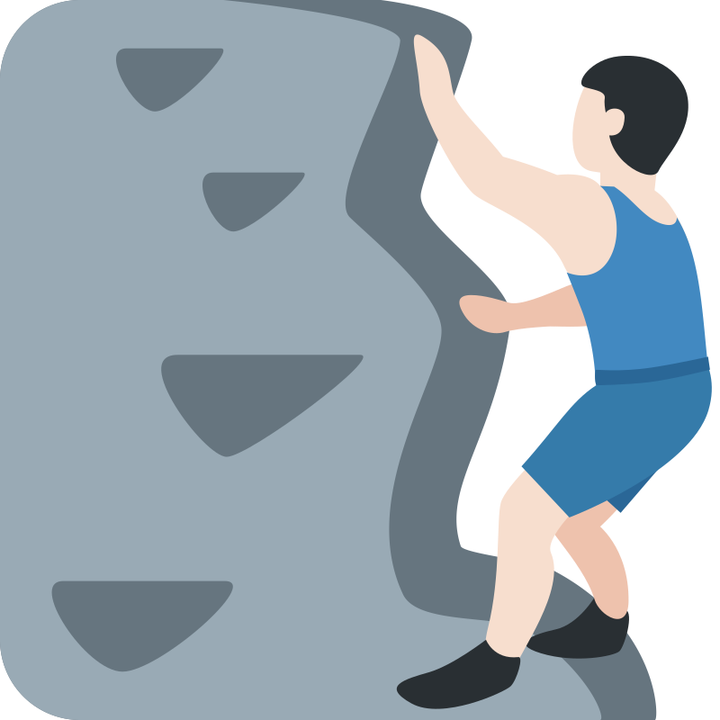

Gondogoro La trek & K2 Trek
 

Gondogoro La trek & K2 Trek
K2 BaseCamp Trekking
21 Nights - 20 Days
- ACCOMONDATION
- TRANSPORT
 MEALS
MEALS-  PROFFESIONAL GUIDES
Country :
PakistanArea :
Gondogoro La trek & K2 TrekTour Type :
TrekkingDuration :
20 DaysBest Season :
Mid April- OctoberOverView
Embark on a mesmerizing journey through the rugged and awe-inspiring Karakoram Range with the Gondogoro La Pass Trek, meticulously crafted by Broad Peak Adventures. This 14-day trek is an unforgettable odyssey through one of the most breathtaking landscapes on Earth. As you set foot on this extraordinary adventure, you’ll be treated to a panoramic spectacle of majestic peaks, glaciers, and serene valleys.
Into the Heart of the Karakoram: We set off on an epic road journey to Askole, the last village before entering the untamed wilderness. The Braldu River becomes our companion as we hike through Jhula and reach Paiju, allowing time for acclimatization and exploration. The journey continues through Khuburse and Urdukas, each campsite more spectacular than the last.
Concordia – The Throne Room of the Gods: Our trek unfolds as we navigate the mesmerizing Baltoro Glacier, leading us to the geographical heart of the Karakoram – Concordia. Here, you’ll be greeted by an astonishing 360-degree panorama of towering peaks, including the iconic K2, Broad Peak, and the Gasherbrum range. This is the kind of sight that will leave you breathless, both from the altitude and the sheer grandeur of the surroundings.
Summiting Gondogoro La Pass:
The heart-pounding excitement continues as you tackle the challenging ascent of Gondogoro La Pass. This high-altitude pass, reaching 5,940 meters, promises an unrivaled view of K2, Broad Peak, and the entire Karakoram range. The descent into the Hushe Valley provides a whole new perspective on this mountainous wonderland, with Hushe village offering a warm welcome from the Balti people.
Returning to Civilization: As the trek concludes, you’ll journey from Hushe to Skardu, along the picturesque Shyok and Indus rivers, taking in the beauty of small Balti villages along the way. In Skardu, you’ll savor the luxuries of a comfortable bed and a revitalizing shower.
A Lasting Memory: As you wrap up your adventure with a flight back to Islamabad, you’ll carry the enduring memories of this remarkable journey in your heart. The Gondogoro La Pass Trek with Broad Peak Adventures is not just a trek; it’s an experience that etches itself into your soul.
Itinerary
Day - 1: Arrival in Islamabad
Arrive in Islamabad, Pakistan.
Our team will meet you at the Islamabad International Airport.
Transfer to your hotel for a restful night and a briefing about the upcoming adventure.
Day - 2: Islamabad to Skardu
An early morning flight to Skardu or by road if there are no flights.
Enjoy panoramic views of Nanga Parbat and other Himalayan peaks during the flight.
Check in at your Skardu hotel and spend the day at leisure.
Day - 3: Skardu - Pre-Trek Preparation
A day to prepare for the trek.
Final gear check and any last-minute purchases.
Explore Skardu's local bazaars and sights.
Day - 4: Skardu to Askole
Drive to Askole in 4x4 jeeps, the last village before the wilderness (6-7 hours).
Meet our local staff and start your trek.
Camp in Askole.
Day - 5: Askole to Jhula
Trek through picturesque landscapes along the Braldu River. Cross the wooden bridge and camp at Jhula.
Day - 6: Jhula to Paiju
Continue trekking along the Braldu River, passing Bardumal.
Reach Paiju, your campsite for the night.
Day: 7: Paiju (Acclimatization Day)
Spend the day acclimatizing in Paiju.
Explore the stunning surroundings or simply relax.
Day - 8: Paiju to Khuburse
Trek deeper into the heart of the Karakoram.
Set up camp at the stunning Khuburse campsite beneath the Uli Biaho Towers.
Day - 9: Khuburse to Urdukas
Continue your ascent with views of Masherbrum and other peaks.
Camp at Urdukas, offering breathtaking panoramic vistas.
Day - 10: Urdukas to Goro II
Trek along the majestic Baltoro Glacier to reach Goro II, a high-altitude camp.
Enjoy fantastic views of the glacier and peaks like Gasherbrum IV.
Day - 11: Goro II to Concordia
Traverse the vast Baltoro Glacier to reach Concordia, the heart of the Karakoram.
Witness a mesmerizing panorama of K2, Broad Peak, Gasherbrum I and II.
Camp at Concordia.
Day - 12: Concordia (Exploration Day)
A day to explore the "Throne Room of the Gods," Concordia.
Optional excursions to Broad Peak Base Camp or other nearby attractions.
Day - 13: Concordia to Ali Camp
Begin your journey towards Gondogoro La Pass.
Set up camp at Ali Camp, surrounded by rugged mountain landscapes.
Day - 14: Ali Camp to Gondogoro La Pass and Khuspang
An early start for the challenging Gondogoro La Pass (5,940m).
Savor breathtaking views of K2, Broad Peak, and the Karakoram range.
Descend to Khuspang and set up camp for your final night in the wilderness.
Day - 15: Khuspang to Hushe
Descend further, transitioning to the Hushe Valley.
Drive to the picturesque village of Hushe.
Interact with the friendly locals and camp for the night.
Day - 16: Hushe to Skardu
Drive through the Shyok and Indus river valleys to Skardu.
Recharge in your Skardu hotel with a well-deserved hot shower and comfortable bed.
Day - 17: Explore Skardu
Explore the beauty and culture of Skardu
Day - 18: Skardu to Islamabad
Fly back to Islamabad, enjoying your last views of the Karakoram.
Explore Islamabad or relax at your hotel.
Day - 19: Departure
Depending on your flight schedule, you may have time for last-minute shopping or sightseeing.
Bid farewell to Pakistan as you depart from Islamabad, concluding your unforgettable Gondogoro La Pass Trek.
*Please note that this itinerary is subject to adjustments based on weather conditions and group preferences. Safety and acclimatization are paramount during this challenging trek, and our experienced guides will ensure your safety and enjoyment throughout the journey. We look forward to making your Gondogoro La Pass Trek with Broad Peak Adventures an incredible and unforgettable experience.
Day - 20: One Spare day in case of any delays
One spare day in case of any delays or issues throughout the tour.
Includes
-
Experienced Guides: Knowledgeable and skilled local guides who are intimately familiar with the terrain, culture, and safety considerations of the region.
-
Accommodations: Accommodation in comfortable hotels in Islamabad and Skardu before and after the trek. During the trek, high-quality tents and camping equipment are provided.
-
Meals: Nutritious and delicious meals throughout the trek, including breakfast, lunch, and dinner. Special dietary requirements can be accommodated upon prior notice.
-
Transportation: Airport transfers, as well as 4x4 jeep transportation to and from Askole.
-
Trekking Permits: All necessary trekking permits and entry fees for the Karakoram National Park.
-
Porter Services: Porters to carry group equipment, such as tents and food, allowing you to trek with a lighter load.
-
Climbing Gear: Crampons for the Gondogoro La Pass climb, ensuring your safety and stability in high-altitude conditions.
-
Cultural Interaction: Opportunities to engage with the warm and friendly Balti people in Hushe village and experience their traditional way of life.
Excludes
-
International Flights: Airfare to and from Islamabad, Pakistan is not included in the package.
-
Travel Insurance: Personal travel and medical insurance is not provided. We strongly recommend purchasing comprehensive travel insurance to cover potential emergencies or trip cancellations.
-
Visa Fees: Any fees related to obtaining a tourist visa for Pakistan are the responsibility of the traveler.
-
Personal Gear: You are responsible for your personal trekking equipment, including clothing, sleeping bags, and other personal items.
-
Meals Outside the Trek: Meals in Islamabad and Skardu before and after the trek are not included.
-
Optional Excursions: Any optional side trips or additional activities not mentioned in the itinerary are at an additional cost.
-
Tips and Gratuities: While not mandatory, gratuities for guides, porters, and the local team are greatly appreciated for their hard work and dedication.
-
Unforeseen Expenses: Any additional expenses incurred due to unforeseen circumstances such as flight cancellations or delays are not included in the package.
-
Please review the inclusions and exclusions carefully, and ensure you have adequate insurance coverage for the trek. Feel free to contact us for any specific questions or further assistance in planning your Gondogoro La Pass Trek with Broad Peak Adventures.
FAQ's
The optimal time for this trek is during the summer months, from late June to early September when the weather is most stable, and the trails are accessible.
This trek is considered strenuous and is best suited for experienced trekkers. The high altitude and challenging terrain require physical fitness and proper acclimatization.
Our itinerary is designed with acclimatization days to help trekkers adjust to high altitudes gradually. Our experienced guides are trained to recognize and manage altitude sickness symptoms.
You’ll need a range of gear, including warm clothing, a good quality sleeping bag, hiking boots, and personal items. A detailed packing list will be provided upon booking.
Yes, porters are available to carry group equipment. They typically carry up to 20-25 kilograms per person, which includes camping gear and supplies.
Yes, travel insurance is mandatory. It should include coverage for medical emergencies, trip cancellations, and evacuation in case of emergencies.
We provide purified water throughout the trek. Trekkers can also bring water purification methods or iodine tablets for extra precautions.
Restroom facilities are basic and include outdoor, environmentally-friendly options. Trekkers should bring their own toilet paper.
Yes, you’ll need trekking permits for the Karakoram National Park. These permits are included in the package, and we will assist you in obtaining them.
Both options are available. You can join a pre-arranged group departure or choose to book a private trek tailored to your preferred dates and group size.
If you have additional questions or require more information about the Gondogoro La Pass Trek with Broad Peak Adventures, please don’t hesitate to reach out to our team. We are here to assist you in planning an unforgettable trekking experience.
Why Broad Peak Adventure?
Experienced
An experienced trekking tour operator, with a team of an experienced adventure enthusiast ensure to give our clients well-designed trekking tour packages.
Certified
We are certified by major tour and travel associations in Pakistan (Ministry of Tourism, Govt of Pakistan and England).
Happy Customers
BroadPeak Adventure has received numerous accolades from its happy customers for its excellent services and best adventure holidays..
Local Offices
We have local office in Skardu, Islamabad and England for our customers to find assistance anytime and anywhere.